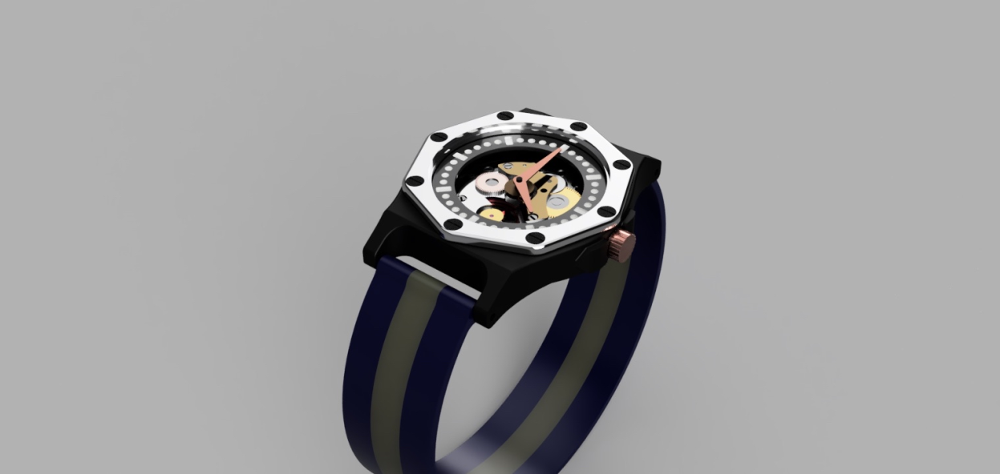
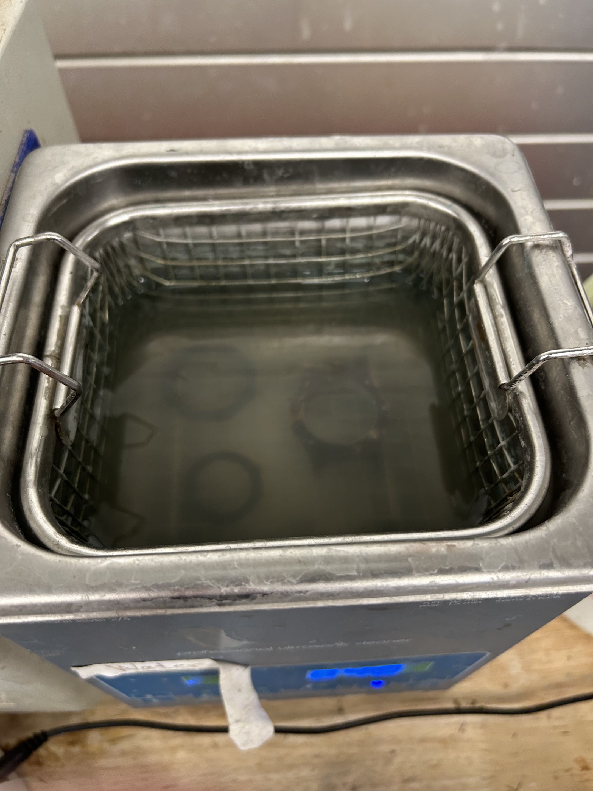

Casted Bronze Watch Design Project
Project Overview

Figure 1: Finished Bronze Watch
This project was a fully custom bronze watch case designed around purchased watch components. I bought the movement, straps, hands, and other internal parts, then designed and manufactured the case to fit everything together cleanly. The goal was not just to make a decorative shell, but to create a functional watch body that could actually be assembled, worn, and serviced.
The final design was modeled parametrically in Fusion 360 so the critical dimensions could be adjusted around the movement, face, screw layout, and fitment tolerances. After finishing the CAD, I printed the design in wax, created a mold, cast the case in bronze, and spent a significant amount of time sanding, polishing, painting, and sealing the final parts.
Design Process
Parametric CAD Design

Figure 2: Final Version CAD Model
I designed the watch case parametrically in Fusion 360 so the dimensions could be controlled around the movement and purchased components. Since the movement, straps, and internal hardware were not custom made, the case had to be modeled around real part dimensions instead of just appearance. This made fitment one of the main design constraints.
The final version uses a three-part layout: a main body, a partial face plate with recessed time indicator lines, and a top retaining piece held down by eight M1 screws. This made the watch much cleaner visually while also making the internal movement easier to access compared to the first version.
First Version and Redesign

Figure 3: First Version CAD Model
The first version helped prove out the basic shape, but it was too large and not very practical to repair. The design only had an opening from the top, which made accessing or removing the movement difficult after assembly. For a watch, that matters because the case still needs to be serviceable if the movement, hands, or battery ever need attention.
For the second version, I redesigned the body to be cleaner, smaller, and more modular. Splitting the watch into multiple parts made the final design easier to assemble and repair while also giving the face more depth. The recessed indicator lines replaced numbers to keep the watch simple and minimal.
Wax Print and Mold Preparation

Figure 4: Wax Printed Pattern
Once the CAD was finished, I printed the parts in wax so they could be used for casting. The wax print acted as the physical pattern for the mold, meaning the quality of the print directly affected the final bronze part. Small surface defects or support marks in this step would carry through and create more finishing work later.
This step connected the digital design to the casting process. Unlike machining, where material is removed from stock, the wax pattern had to account for how the metal would eventually fill the mold and how the part would be cleaned up after casting.
Casting and Cleaning

Figure 5: Post-Casting Cleaning Bath
After the wax pattern was molded and cast, the bronze part had to go through a cleaning process before it could be finished. The casting came out with extra stubs and rough areas left from the casting process, so the raw part was not immediately wearable or ready for assembly.
The part was placed into a cleaning bath after casting to help remove leftover surface material and prepare it for finishing. This was one of the messier parts of the project, but it was necessary before moving into the long sanding and polishing process.
Sanding and Surface Finishing

Figure 6: Sanding and Stub Removal
The most time-consuming part of the project was finishing the bronze after casting. I had to remove the casting stubs, level the surrounding surfaces, and sand the case until the geometry looked intentional again. This took a lot of careful hand work because the goal was to remove defects without destroying the edges and details of the design.
After the major cleanup was complete, I continued sanding the case to even out the surface finish. This step made the difference between the part looking like a raw casting and looking like a finished watch case.
Polishing, Tumbling, and Protection

Figure 7: Protective Clear Coat
After sanding, I buffed the case and used a tumbler to improve the final surface finish. Bronze can look great when polished, but it also oxidizes and can stain skin over time. Since this was meant to be worn, the surface finish needed to be more than just cosmetic.
To protect the bronze, I coated the finished parts with clear nail polish. This created a barrier between the metal and skin while helping preserve the polished appearance. I also filled the recessed time indicator lines with black nail polish to make the face easier to read and give the design more contrast.
Final Assembly
Figure 8: Completed Watch
The final assembly brought together the custom bronze case with the purchased watch components. The movement, straps, and hands were installed into the case, while the top piece was fastened using eight M1 screws. The three-part design made assembly cleaner and gave the final watch a more intentional, mechanical look.
The finished watch is a mix of CAD design, casting, hand finishing, and assembly. Even though I did not manufacture the internal movement or straps, designing the case around real components made this a strong exercise in tolerance, packaging, and design-for-assembly.
Failures and Iteration
The largest design issue came from the first version of the watch case. It was oversized and did not make the movement easy to repair or remove. Since it only had access from the top, the internal components were harder to service than they should have been.
The second version solved this by using a cleaner three-part construction. The separate face and top retaining piece made the watch easier to assemble and gave the design more visual depth. The final version also looked much more refined and wearable than the first attempt.
The manufacturing process also created its own challenges. Casting left rough stubs and uneven surfaces that had to be removed by hand. A large portion of the project became sanding, polishing, and finishing the bronze until it looked like a final product instead of a raw casting.
Figure 9: Version 1 Design

Figure 10: CAD Sketch Planning
Figure 11: Casting Cleanup
Final Result
The final watch is a wearable cast bronze case designed around real purchased components. This project taught me a lot about designing around existing hardware, planning for assembly, and how much post-processing is required after casting. The finished part looks simple, but getting it there required CAD iteration, casting prep, surface finishing, detail painting, and protective coating.
Figure 12: Final CAD Design
Figure 13: Protective Coating
Figure 14: Finished Watch